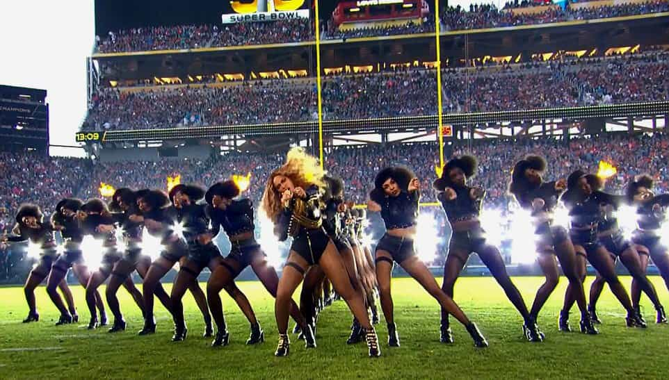
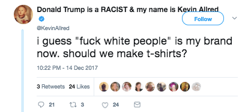

Alfonso Taft is a surfer stoner All-American Aryan alpha male quarterback. Raised in the Northeast, he speaks with a Southern twang for no apparent reason. Host of America's #1 Chadcast.


Liking Beyoncé is much more subtle than having green hair but it’s often an indicator that a woman is an extreme leftist. I’ve discovered a direct correlation between how much a woman likes Beyoncé and their dedication to cultural Marxism. In this sense Beyoncé serves as a barometer and a warning for men who meet girls that worship her like a golden calf. If the woman you’re interacting with is huge Beyoncé fan, it may be time to abandon ship.
Girls, we run this motha (yeah!)
Girls, we run this motha (yeah!)
Girls, we run this motha (yeah!)
Girls, we run this motha girls
Who run the world? Girls!
Who run the world? Girls!
Who run the world? Girls!
Who run the world? Girls!
Who run the world? Girls!
Who run this motha? Girls!
Who run this motha? Girls!
Who run this motha? Girls!
Who run this motha? Girls!
Who run this motha? Girls!
Who run the world? Girls!
Who run the world? Girls!
Who run the world? Girls!
Who run the world? Girls!
Wow. Those are some really profound lyrics. I wonder how many globalist corporations it took to come up with that jam?
Starbucks coffee, pizza, Netflix, and Beyoncé are integral parts of basic bitch culture. If you ask a basic girl who is their favorite artist most of them will you Beyoncé without hesitation.
Beyoncé herself is a mother married to alpha Jay Z. Her main flaw isn’t her personal life choices, which are successful, but rather the type of fan that she attracts. A typical Beyoncé fan converts their own shortcomings into adoration and says intelligible sentences like; “Oh my god, I wish my life was Beyoncé” and, “Beyoncé is like my life.”
When I was in college, sorority girls would sing Beyoncé’s “Drunk in Love” at the top of their lungs during their weekly drug and alcohol bender. The girls learned how to get totally shitfaced and “slay” like Beyoncé, but didn’t learn how to cook or clean. This is basic bitch Beyoncé syndrome in a nutshell.
If you meet a woman and she’s a Beyoncé fan, it’s likely she prefers to eat pizza and drink alcohol rather than partake in traditionally feminine activities. I’ve personally dated two girls who paid cash money to attend a Beyoncé concert. Neither one them knew how to cook and both of them used online food ordering services like GrubHub and Seamless.

Beyoncé is a false idol used by global elites to indoctrinate the populace into degeneracy. Beyoncé is at the forefront of leftist causes like Soros-funded Black Lives Matter and Feminism.
The 2016 Super Bowl between the Denver Broncos and Carolina Panthers featured Beyoncé performing a Black Lives Matter rally live on television.
“The halftime show I thought was ridiculous anyway. I don’t know what the heck it was. A bunch of people bouncing around and all strange things. It was terrible,” said former NYC mayor Rudolph Giuliani of the performance.
Black Lives Matter is known to burn down cities, block ambulances, kill, riot, and partake in racially motivated violence when they are instructed to do so by screens.
Hillary Clinton quoted a Beyoncé lyric during an interview with Black Lives Matter Activists when asked, “What’s something you always carry with you?” Clinton responded, “Hot sauce”—an absurd and insatiable lie. Clinton’s response was in reference to Black Lives Matter themed song, “Formation” in which Beyoncé shamelessly panders with the lyric “I got a hot sauce in my bag, swag.”
The video for “Formation” features homosexual black men twerking while Beyoncé brags about taking young black men shopping and getting their songs played on the radio—scenarios only fit for clown world.
Below is an example of mentally deranged leftists indoctrinating their children into celebrity worship of the golden calf of the millennial age. On the right you will see in gold lettering the phrase; “Feminist Like Beyoncé.”
Unfortunately for this young lad, his Beyoncé-worshipping liberal parents will likely introduce him to hormone blockers in a few short years. All children of liberal parents are in danger of being castrated so their child can be more “diverse” like their favorite idol, Beyoncé.
When I was in college, Jay Z and Beyoncé were featured in our textbooks. Since that time the cultural Marxist conditioning of the youth has accelerated and college students can now take full on courses on Beyoncé. Kevin Allred, a flamboyant homosexual who publicizes his hatred for white people currently teaches a college course on Beyoncé.
According to Kevin’s website:
In 2010, he created the popular college course Politicizing Beyoncé, recognized by Beyoncé herself and her Parkwood team. The course earned world-wide media attention and he’s since taught the curriculum in University classrooms all over the country and traveled the world doing speaking events. His writing has been featured at Salon, Quartz, Huffington Post, the Feminist Wire, Washington Post, the Establishment (among others), and he was a featured contributor on MSNBC’s “So POPular with Janet Mock.”He also hosts the podcast “Bey-Ond Pop Culture.
Here are some of Kevin’s tweets:

Liking Beyoncé is a clear and direct sign the woman you are speaking with is completely indoctrinated. If you’re already dating a girl who likes Beyoncé, it isn’t the end of the world. You can use this to your advantage if caught cheating. Jay Z has been candid about being unfaithful at times during his marriage with Beyoncé.
If caught cheating by a girl who likes Beyoncé, you can rationalize it by comparing her to Beyoncé and telling her to stick by her man despite your alpha male infidelity.
Beyoncé fans are Obama fans. Obama fans are Soros fans. Soros fans are indoctrinated via cultural Marxism to destroy Western society, culture, and it’s people. Beyoncé is their princess of propaganda and she attracts susceptible women into her “Beyhive” cult of worship.
Read More: 8 Common Types of Overly Promiscuous Girls